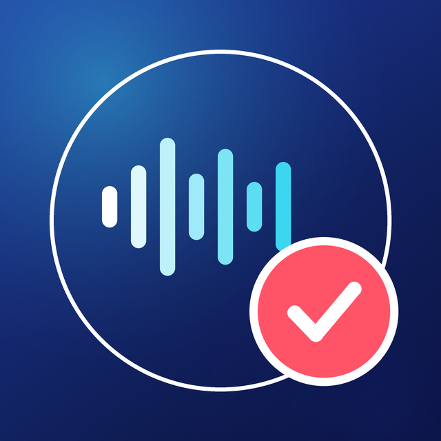
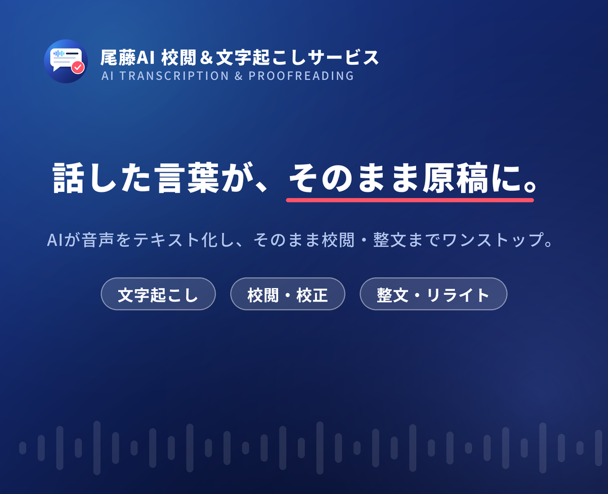
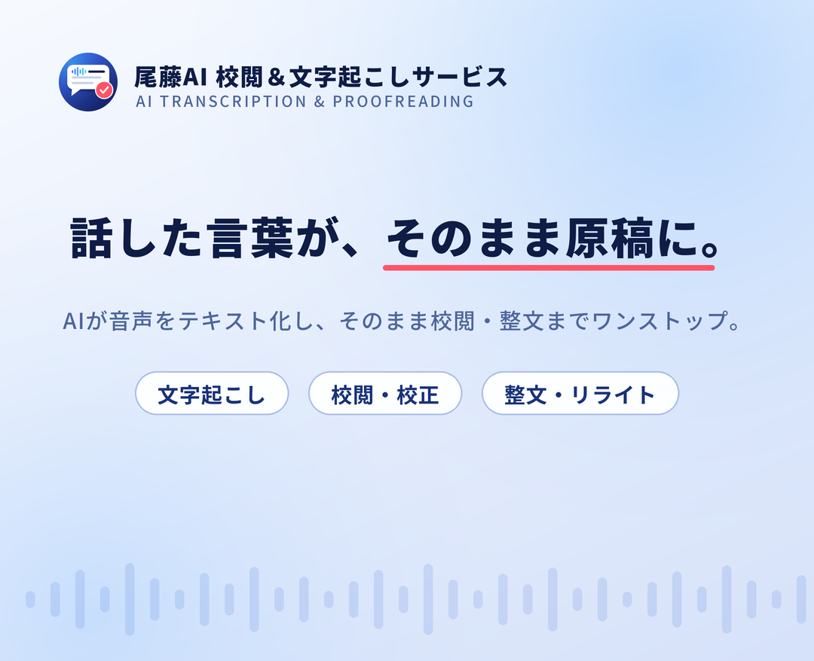

尾藤AI 校閲＆文字起こしサービス／アイコン3案・背景2案。画像を右クリック（長押し）で保存できます。
「音声がテキストになる」＋「赤入れで校閲」を1枚に。小さくても形が崩れません。
名前で覚えてもらう案。トーク一覧でも屋号が読み取れます。
いちばんシンプルな案。音声まわりの印象を強く出したいとき向け。

アイコンと同系色。白文字がはっきり出ます。

やわらかい印象にしたいとき用。内容は同じ。

| プロフィール画像 | 640 × 640 px／PNG／3MB以下。LINE上では円形に切り抜かれるため、要素は中央の円内に配置。 |
|---|---|
| 背景画像 | 1080 × 878 px／PNG／10MB以下。下部にアイコンとアカウント名が重なるので、下 1/3 は文字なし。 |
| カラー | ネイビー #0D1A3F／ブルー #3A6AFF／シアン #3CD6F0／校閲レッド #FF5468 |
| 書体 | Noto Sans JP（Black / Medium） |
| 再生成 | assets/line/tools/icon.py・bg.py。キャッチコピーは bg.py 冒頭の定数で変更可。 |
bg.py の TITLE_A / TITLE_B で変更できます。PILLS のリストを書き換えるだけです。